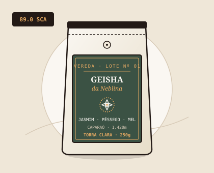
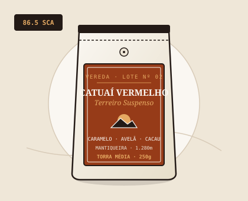
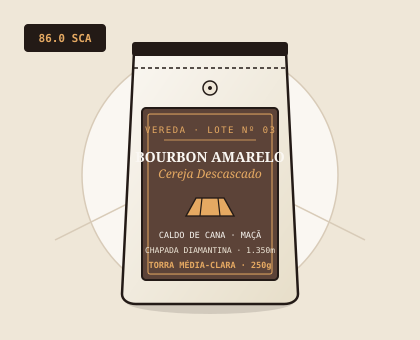
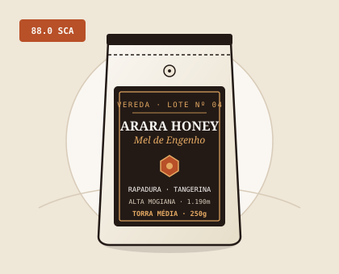
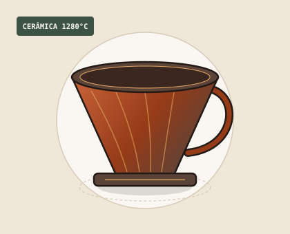
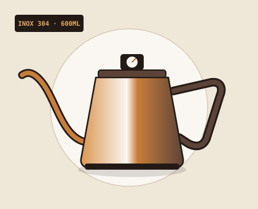

Colhido na neblina das serras altas. Torrado ao compasso de quem sabe esperar.
A Vereda é uma microtorrefação autoral dedicada a microlotes brasileiros de pontuação superior a 86 pontos SCA e utensílios cerâmicos desenhados para a filtragem manual sem pressa.
Fig. 01 — Extração gravitacional a 93 °CProporção recomendada: 1:15
CATÁLOGO DE LOTE NUMERADO01 / 04
Safra Atual & Artefatos de Extração
Cada café é torrado em lotes de 5 kg e enviado com a data exata da fornada. Os preços abaixo estão integralmente sincronizados com o simulador de pedidos.
ITEM 01 · TORRA CLARAEdição Rara · 89 SCA

Microlote · Serra do Caparaó (1.420m)
Lote 01 · Geisha da Neblina (250g)
Fermentação lenta em cereja sob clima frio de montanha. Entrega notas florais de jasmim, pêssego branco e mel de laranjeira com acidez brilhante.
Jasmim
Pêssego Branco
Mel de Laranjeira
ITEM 02 · TORRA MÉDIA86,5 SCA

Terroir · Mantiqueira de Minas (1.280m)
Lote 02 · Catuaí Vermelho Natural (250g)
Secagem lenta em terreiro suspenso sob sol ameno de inverno. Corpo aveludado e envolvente com notas de caramelo tostado, avelã e cacau 70%.
Caramelo Tostado
Avelã
Cacau 70%
ITEM 03 · TORRA MÉDIA-CLARA86,0 SCA

Clássico · Chapada Diamantina (1.350m)
Lote 03 · Bourbon Amarelo Lavado (250g)
Cereja descascado lavado em água de nascente. Xícara extremamente limpa com doçura de caldo de cana, maçã vermelha assada e especiarias doces.
Caldo de Cana
Maçã Assada
Canela Suave
ITEM 04 · PROCESSO HONEYColheita Tardia · 88 SCA

Experimental · Alta Mogiana (1.190m)
Lote 04 · Arara Mel de Engenho (250g)
Secagem com a mucilagem natural do fruto preservada. Revela doçura licorosa de rapadura, tangerina madura e finalização prolongada de amêndoas.
Rapadura
Tangerina Madura
Amêndoas
ITEM 05 · OLARIA AUTORALFeito à Mão

Artefato · Grés Queimado a 1.280 °C
Objeto 05 · Coador Vértice em Cerâmica
Modelado individualmente em torno elétrico com argila tabaco da Serra da Mantiqueira. Suas 24 nervuras espirais evitam a obstrução do fluxo e mantêm o calor constante.
Ângulo 60°
Filtros Tam. 02
Alta Retenção Térmica
ITEM 06 · INSTRUMENTO DE PRECISÃOCom Termômetro

Instrumento · Aço Inox 304 Escovado
Objeto 06 · Chaleira Bico de Ganso Âmbar (600ml)
Desenvolvida para despejo laminar sem turbulência excessiva na cama de café. Possui termômetro analógico na tampa e cabo contrabalanceado em madeira.
Capacidade 600ml
Termômetro Integrado
Bico de Precisão
MANIFESTO & OFÍCIO02 / 04
Por que nunca torramos um grão antes de conhecer a serra onde ele nasceu
Durante décadas, os melhores cafés colhidos nas encostas brasileiras deixavam o país ainda verdes em navios cargueiros, enquanto ao consumidor local restavam torras excessivamente escuras que escondiam defeitos sob o amargor do carvão. A Vereda nasceu para interromper esse ciclo.
Trabalhamos lado a lado com quatro famílias produtoras no Caparaó, na Mantiqueira de Minas, na Chapada Diamantina e na Alta Mogiana. Compramos micro-lotes colhidos seletivamente à mão apenas quando a cereja atinge o ponto exato de brix, remunerando o produtor acima da cotação comoditizada.
“Torrar café não é cozinhar grãos em série; é revelar em doze minutos de fogo o que a serra levou doze meses de chuva, sol e neblina para construir.”
01
Rastreabilidade de Terreiro
Cada pacote informa a altitude exata do talhão, a variedade botânica, o método de secagem e a pontuação na tabela da Specialty Coffee Association (SCA).
02
Microtorra Semanal de 5 kg
Não estocamos café torrado. Nossas fornadas acontecem todas as terças-feiras com perfis de torra clara a média para preservar os açúcares naturais e óleos essenciais.
03
Objetos de Longa Permanência
Nossos coadores cerâmicos e chaleiras não seguem obsolescência programada: são instrumentos calibrados para acompanhar milhares de manhãs.
PROTOCOLO DE BANCADA03 / 04
A Receita Oficial da Casa para Filtrados
Para extrair toda a doçura e limpidez dos nossos microlotes no Coador Vértice, sugerimos três etapas de despejo com água a 93 °C.
00:00 — 00:4060 ml de água
1. Pré-infusão (Blooming)
Com 20g de café moído médio, despeje 60 ml de água em movimentos circulares suaves para liberar o gás carbônico natural da torra recente.
00:40 — 01:30+ 120 ml (Total: 180 ml)
2. Extração de Acidez e Aromas
Realize o primeiro ataque espiral do centro para as bordas sem tocar no papel filtro, extraindo as notas florais e frutadas mais voláteis.
01:30 — 02:45+ 120 ml (Total: 300 ml)
3. Corpo e Doçura Final
Finalize com um fluxo central contínuo usando a Chaleira Bico de Ganso até atingir 300 ml. Aguarde o escoamento completo e sirva.
BANCADA DE PEDIDOS · INTERAÇÃO JAVASCRIPT04 / 04
Simulador de Compra & Fechamento de Lote
Calcule o orçamento completo da sua seleção de cafés e utensílios diretamente pelo navegador.
Interação via Caixas de Diálogo Nativa10% OFF a partir de R$ 180,00
Como funciona a simulação de compra
Ao acionar o botão "Simular compra" abaixo, as quantidades desejadas de cada um dos 6 produtos do catálogo serão solicitadas sequencialmente por meio de caixas de diálogo do navegador (prompt()), e o resumo final detalhado será exibido em uma janela de confirmação (alert()).
01
Preenchimento das quantidades:
Informe um número inteiro positivo (ex.: 1, 2, 3) para os itens que deseja adquirir, ou digite 0 para qualquer produto que não queira incluir no pedido.
02
Validação automática de segurança:
Valores negativos, números decimais, textos ou campos deixados em branco são considerados inválidos e o sistema solicitará o valor daquele produto novamente. Pressionar Cancelar interrompe a simulação imediatamente.
03
Regra do Desconto Clube de Torra (10%):
Pedidos cujo subtotal somado atinja R$ 180,00 ou mais recebem automaticamente 10% de desconto. Compras abaixo de R$ 180,00 não recebem desconto, mantendo o valor integral.
Abre a sequência interativa de prompt() para os 6 itens e apresenta o resumo em alert().